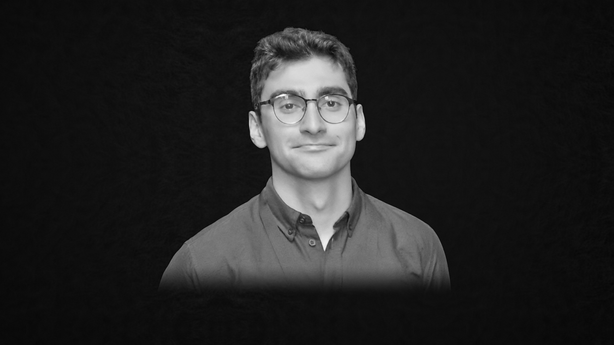
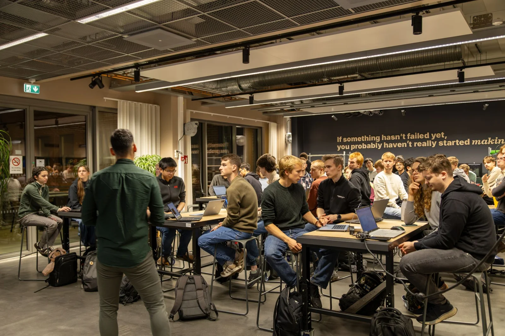
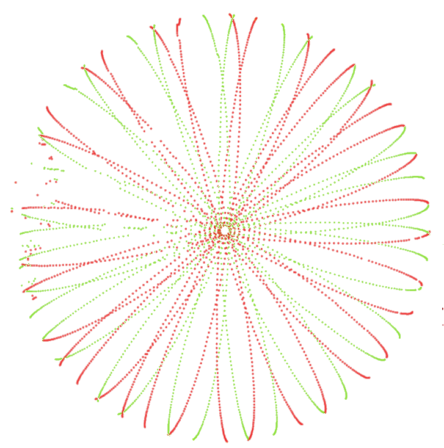
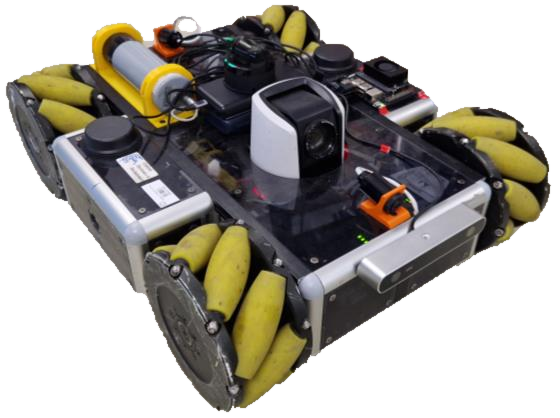
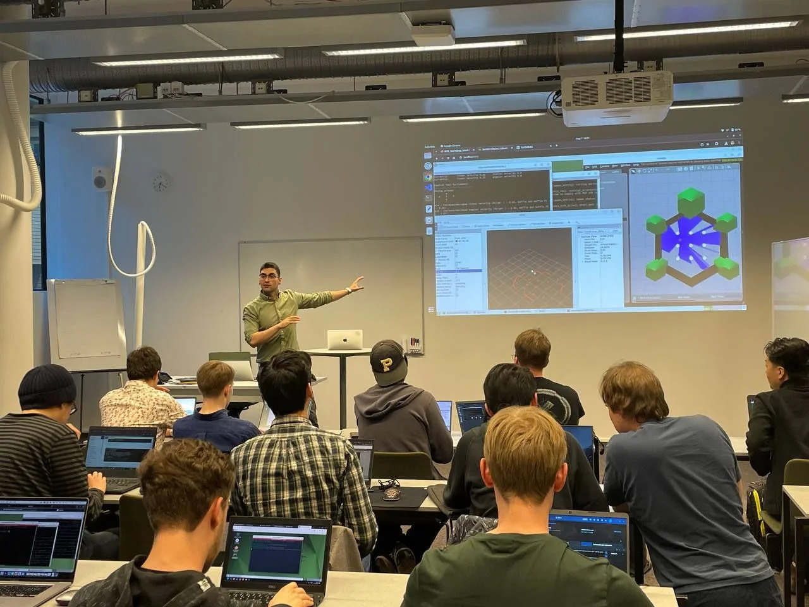

Perception & localization
LiDAR processing, SLAM, and mobile robot navigation.


LiDAR processing, SLAM, and mobile robot navigation.
ROS, ROS 2, Python, C++, and sensor integration.
Practical robotics and ROS 2 workshops.
ROS 2

Doctoral research at Aalto University, with a seven-month research visit to CERN in 2024.
Scan registration for sparse measurements and repetitive geometry.
Filtering moving objects from 3D maps.
Papers, code, and a LiDAR dataset from six CERN environments.
Density-based filtering of moving objects from point clouds, evaluated against comparison methods in a dynamic indoor environment.
Event-camera propeller-speed cues and Kalman filtering for drone prediction, evaluated on the FRED dataset.
Unitree LiDAR scans and IMU recordings from six CERN environments. Open data under CC BY 4.0.
6 publications
IEEE ACCESS · FIRST AUTHOR
JOURNAL OF INTELLIGENT & ROBOTIC SYSTEMS
JOURNAL OF INTELLIGENT & ROBOTIC SYSTEMS · FIRST AUTHOR

Unity teleoperation interface with mapped surroundings, distance overlays, and emergency-stop control.
Construction-site monitoring and environmental change detection.
Road-scene segmentation and steering in rural driving environments.
Robotics workshops and competitions coaching at Aalto Robotics Club.
